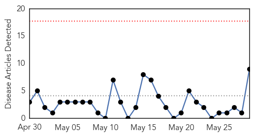
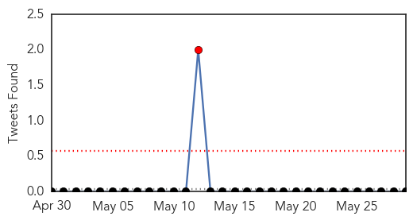
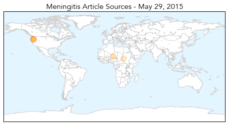
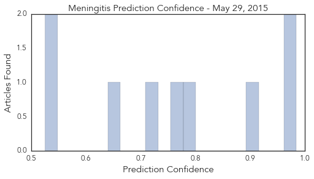

Toggle navigation
Early Warning
Daily Alerts
Meningitis
May 29, 2015
Compare to:
-
Dengue Fever
Hemmorhagic Fever
Mold/Fungal Infection
Influenza
Pertussis / Whooping Cough
Middle East Respiratory Syndrome
Cholera
Hepatitis
Chikungunya
Yellow Fever
Bubonic Plague
West Nile Virus
Swine Flu
Ebola
Measles
Unknown
Mumps
30 Day Trends
Web: 0
alerts
, 0
warnings
Twitter: 1
alerts
, 0
warnings
Top Articles:
0.984
Meningococcal disease in Niger
0.983
Hays elementary school reports viral meningitis case
0.900
Seventh case of meningococcal disease traced to U. of Oregon cam
0.792
University of Oregon meningitis outbreak grows; student's father diagnosed
0.764
Meningitis cases, drinking water shortage in Khartoum - Sudan
0.711
7th case of meningococcal disease linked to UO outbreak
0.654
7th case of meningococcal linked to UO outbreak
0.535
7th meningitis case linked to UO under investigation
0.525
'This outbreak is not over': Meningitis case in UO dad
Top Tweets:
No tweets found for May 29, 2015
Web/News Articles

Tweets

Article Locations

Article Confidences
